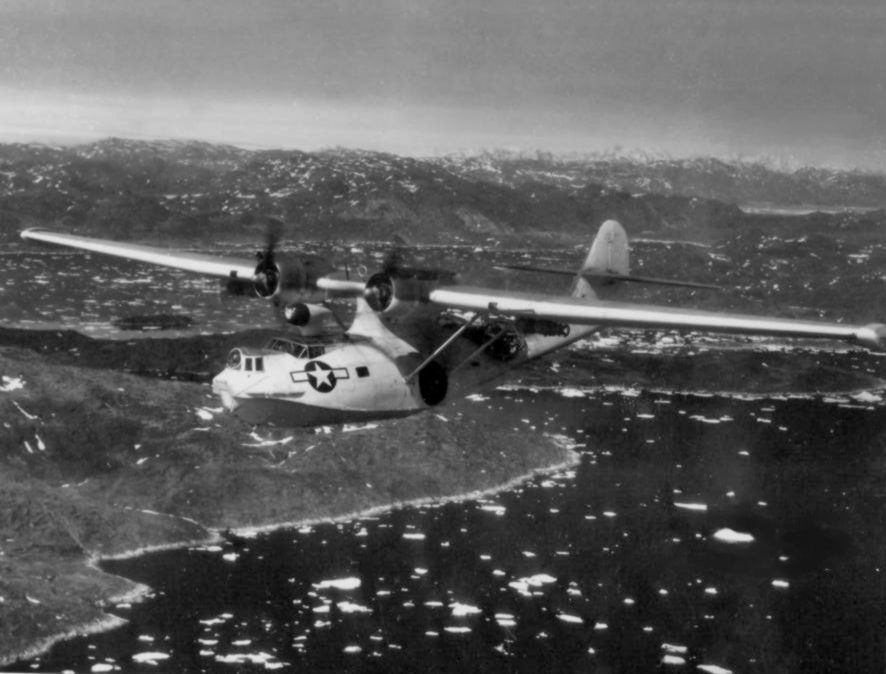
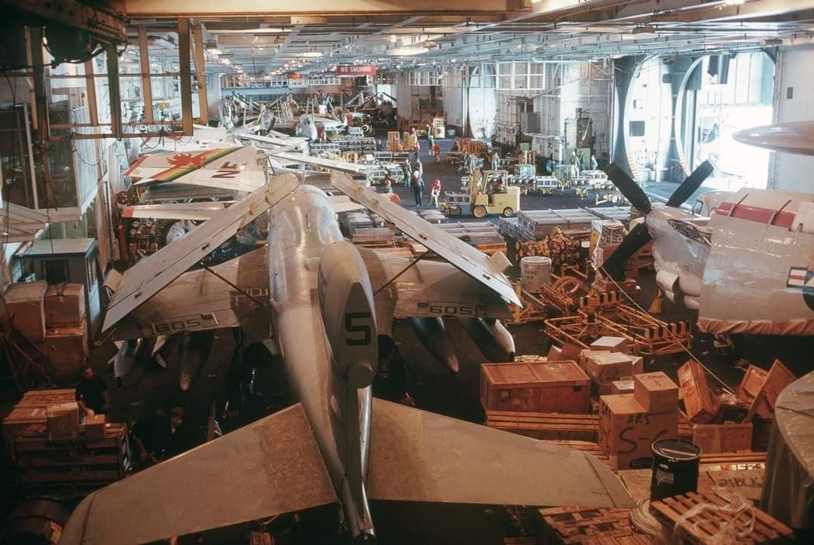
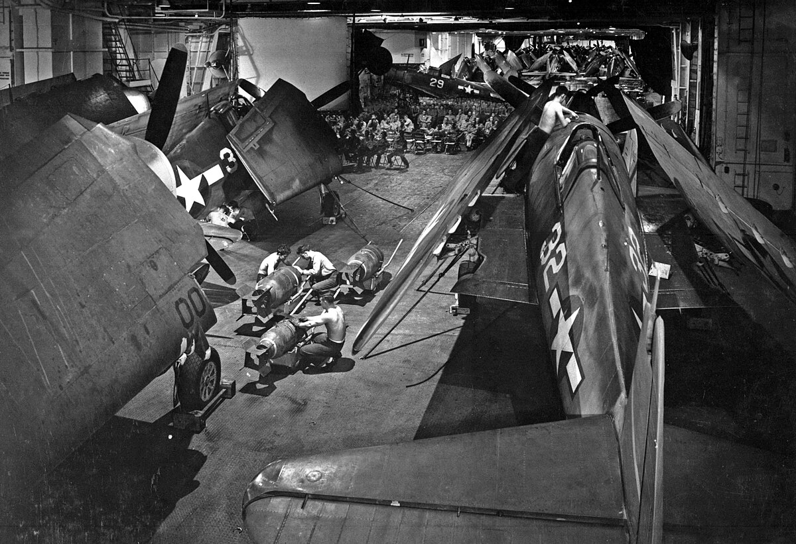
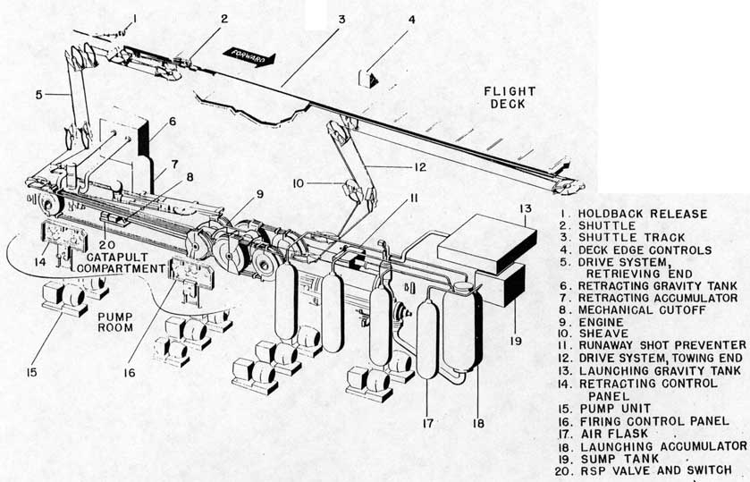
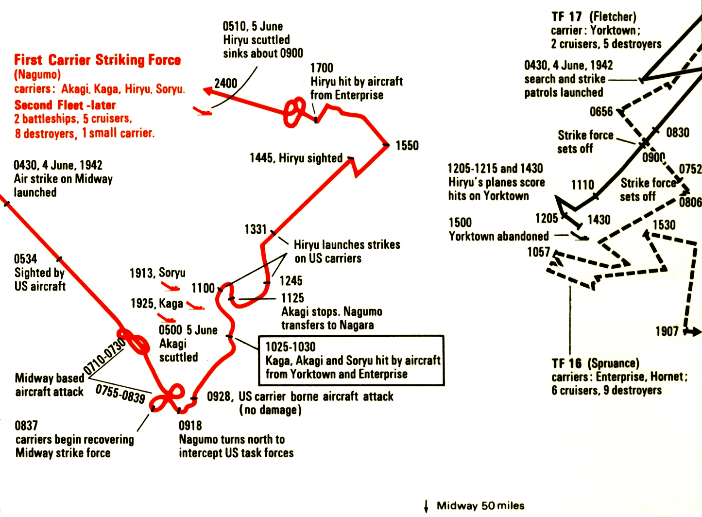
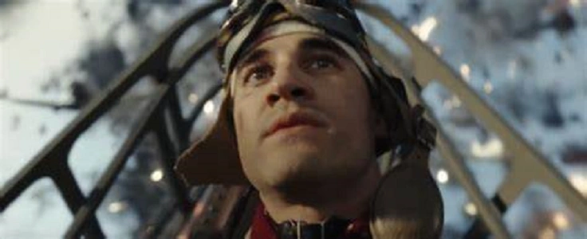
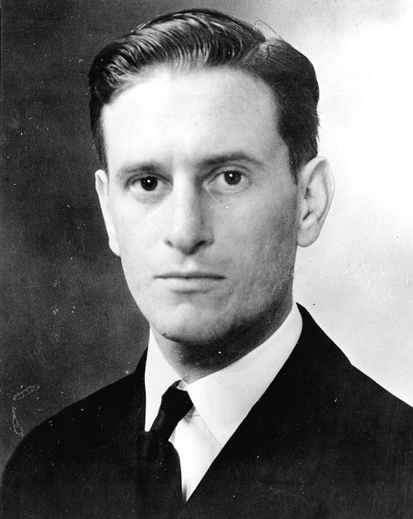

미드웨이에서의 레이더 이야기 (3) - 미해군 항모들의 역주행
게시: 2023-12-28T06:30:53+09:00
<미해군 항모전단의 문제> 한편, 요크타운에서는 플렛처 제독이 새벽 5시 반 경에 PBY Catalina 수상정으로부터 일본 기동부대를 발견했다는 보고를 받음. 원래 당연히 공격 성공 확률은 대규모 편대를 모아서 한꺼번에 날리는 것이 좋음. 그러나 정작 요크타운의 SBD 급강하 폭격기들은 모두 일본 기동부대를 찾아 정찰임무를 띠고 날아다니고 있었음. 이럴 땐 어쩌지? 요크타운의 SBD 급강하 폭격기들이 귀환하여 급유 및 폭탄 장착을 마친 뒤 호넷과 엔터프라이즈의 폭격기/뇌격기들과 함께 다 같이 날아가야 하나?

(Consolidated PBY Catalina는 원래 정찰 및 폭격용으로 만들어진 장거리 수상정. PBY에서 PB는 Patrol Bomber를 뜻하고 Y는 그 제작사인 Consolidated사에서 지정한 코드명. 보시다시피 상당히 큰 기체로서 8명이 정원. 최대 1.8톤의 폭탄 장착 가능. 그러나 실제로는 너무 느리기 때문에 장거리 정찰용으로 많이 사용되었는데, 이건 매우 위험한 임무. 실제로 개전 초기 미해군 아시아 함대에 배속되어 있던 카탈리나 44대 중 41대가 3달만에 모조리 격추됨. 사진은 1945년 그린랜드 상공을 날고 있는 레이더 장착 카탈리나 비행정.)
1930년대부터 항모 전술을 개발하던 영국 해군의 교리에 따르면 항모전의 핵심은 다른 거 없이 무조건 선빵. 선수비 후공격 따위는 없고 무조건 먼저 때리는 측이 이기게 되어 있었음. 아무리 수비를 두텁게 해도 반드시 적 폭격기 1~2대는 방어망을 뚫고 들어오게 되어 있고, 인화성 높은 항공유와 폭탄, 어뢰 등이 격납고에 잔뜩 들어있는 항모는 단 1~2방의 폭탄을 맞고도 작전불능에 빠질 수 있기 때문.

(항모 격납고는 흔히 '통제된 혼돈'이라고 불릴 정도로 평화시에도 매우 복잡하고 혼란스럽고 위험한 장소. 이건 니미츠급 항모의 격납고인데 EA-6 전자전기와 E-2 조기경보기가 보임.)

(이건 미드웨이에 참전했다가 침몰한 요크타운이 아니라, 나중에 만들어진 Essex급 항모 요크타운(CV-10)의 격납고 모습. 저 넓고 여유있는 격납고의 크기. 저기 보이는 폭탄들은 500파운드 폭탄.)
결국 플렛처는 그냥 호넷과 엔터프라이즈의 공격편대만 먼저 출격시키기로 함. 그런데 그게 또 쉽지 않음. 일본 기동부대와 미해군 Task Force와의 거리가 아직 매우 멀었던 것. 일단은 미해군 항모들이 최대한 일본 기동부대쪽으로 달려가 거리를 좁힌 뒤에 함재기들을 날려야 함. 거기에 문제가 추가됨. 바로 바람의 방향. 당시 항모들에게는 유압식 catapult (사출기)가 있기는 했지만 대부분의 함재기들은 사출기의 도움 없이 그냥 자체 동력으로 이함. 단, 이러려면 항모가 맞바람을 받으며 30노트 이상의 전속력으로 달려야 함. 그런데 그날 아침 바람 방향은 약한 남동풍. 남서쪽에 있는 일본 함대 방향과는 상당히 벗어난 방향으로 강하게 달려야 함. 빨리 접근해도 거리가 간당간당한 마당에 반대 방향으로 달려야 한다고?

(그림은 WW2 당시 Essex급 항모에 장착되던 유압식 사출기인 Type H Mark 8 Catapult의 얼개. 현대적인 증기식 사출기에 비해 힘도 약하고 유증기 폭발의 위험이 존재하여 실제로는 잘 사용되지 않았음. 증기식 사출기는 저렇게 도르레로 잡아당기는 방식이 아니라 좁은 관을 통해 피스톤을 압축 증기로 시원하게 밀어내는 방식인데, 그건 WW2 직후 영국 해군에서 개발된 것. 현대식 항공모함과 WW2 당시의 항공모함에서 가장 차이가 나는 것은 4가지인데, 그 4가지 모두가 영국 해군이 개발한 것. 자세한 이야기는 https://nasica1.tistory.com/477 참조)
근데 그것만으로는 부족했는지 거기에 문제가 하나 더 추가됨. 바로 비행갑판 요원들의 숙련도. 나폴레옹 시대 전열 보병에게 가장 중요한 기술은 전장식 머스켓 소총을 빨리 재장전하여 연속사격하는 것. 적군이 2발 쏠 동안 아군이 3발 쏜다면 같은 병력이라고 해도 아군의 화력이 1.5배 더 우월한 셈. 마찬가지로 당시 (그리고 지금도) 항모 비행갑판 요원들에게 가장 중요한 기술은 함재기를 재빨리 이함시키는 것. 이건 함재기의 항속거리와 연결되는 매우 중요한 기술. 한 번에 한 대씩 날아오를 수 있는 함재기들이 정말 한 대씩 적함대에 달려들었다가는 한 대씩 집중 포화를 받고 격추될 뿐. 그러니 적어도 같은 편대끼리는 모여서 돌격해야 함. 그런데 항모 한 척에서 40대가 뜬다고 가정할 때, 1분에 1대씩 이함한다고 해도 처음 이함한 함재기와 마지막에 이함한 함재기 사이에는 40분이라는 시간차가 남. 편대 단위로 움직인다는 것을 생각하면, 가장 먼저 이함한 함재기의 연료 잔량이 전체 편대의 항속거리를 결정. 그러니 그렇게 1대 이함하는데 1분이 걸린다면 이 항모의 편대들은 시작할 때부터 40분에 해당하는 항속거리를 까먹고 시작하는 것. 반대로 말하면, 솜씨 있는 갑판 요원들이 1분에 4대씩 날려보내는 항모의 함재기들은 훨씬 더 긴 항속거리를 갖게 되는 것. 소총으로 따지면 사거리 100m짜리 소총을 든 적군을 사거리 200m짜리 소총으로 상대하는 것. 일본 항모는 이걸 해냄. 4척에서 총 108대의 함재기들이 이함하는데 걸린 시간은 딱 7분. 항모 1대에서 1대 날리는데 걸린 시간 딱 15초. 그런데 엔터프라이즈와 호넷이 117대의 함재기들을 날리는데 걸린 시간은 무려 1시간이 좀 넘음. 항모 1대에서 1대 날리는데 걸리는 시간 62초. 일본보다 무려 4배가 더 걸림. 이런 차이는 4대2라는 항모 대수의 차이도 있지만, 미해군 함재기들에 비해 일본 함재기들이 날개 접는 것이 훨씬 단순한 수동 방식이었던 것도 한 몫 했을 듯. 그리고 이렇게 연속 출격에 1시간이 넘게 걸렸다는 것은 미해군 항모들이 무려 1시간 넘게 반대 방향으로 전속력 질주를 해야 했다는 것. 뜻하는 바는 그만큼 미해군 함재기들은 항속 거리에서 그만큼 손해를 보았다는 것이고, 그를 보충하기 위해 미해군 항모들은 일본 항모에 훨씬 더 가깝게 접근해서야 함재기들을 출격시킬 수 있었다는 뜻. 그 결과, 일본 기동부대 발견 보고가 들어온 것은 5시 반인데 출격을 완료시킨 것은 무려 2시간이 지난 7시 45분경. 이렇게 오래 걸린 출격은 나중에 결국 사달을 일으킴.

(지도 오른쪽에서 점선으로 표시된 스프루언스의 TF 16이 06시 56분부터 남동쪽으로 방향을 바꿔 1시간 넘게 달린 뒤에야 다시 일본 함대에 접근하는 것이 보임. 그게 바로 폭탄과 어뢰를 실어 무거운 함재기들을 이함 시키기 위해 바람의 방향에 따라 맞바람 받으며 열심히 달리는 모습. 그런데... 왜 저렇게 폭격기들을 띄운 이후 왜 다시 일본 함대에 접근했을까? 연료가 간당간당한 상태로 돌아올 함재기들을 조금이라도 더 빨리 받아주기 위해서임. 한편, 직선으로 표시된 플렛처의 TF 17도 04시 30분부터 역주행하는 모습이 보이는데, 그때 정찰 임무를 위해 급강하 폭격기 편대를 띄웠던 모양. )
거기에다, 한데 뭉쳐서 가는 것이 더 효과적이겠지만 일단 빠르게 먼저 치는 것이 더 중요하다면서 요크타운의 급강하 폭격기들이 정찰에서 돌아와 폭격 준비하는 것을 기다리지 않고 먼저 출격했던 의미가 거의 사라짐. 요크타운도 그 사이에 준비를 마치고 불과 30분 뒤에는 뇌격기부터 먼저 출격시켰던 것. <왜 미해군 뇌격기들은 무지성 돌격을 했나> 요크타운과 합동 작전을 펼치지 못한데다 이렇게 연료가 간당간당할 정도로 먼 거리에서 역주행을 해가며 1시간 가까이 시간을 낭비해가며 날린 공격 편대가 제대로 된 성과를 낸다면 기적. 당연히 기적은 없었을 뿐만 아니라 본질적인 문제까지 속속 노출됨.
가장 큰 문제는 먼저 이함한 항공기들과 나중에 이함한 항공기들 사이에는 무려 1시간 차이가 났기 때문에, 도저히 마지막 편대가 다 이함할 때까지 기다렸다가 함께 돌격하지 못했다는 것. 결국 각 편대들은 따로 목표물로 향함. 그럴 경우 여러가지 문제가 발생하는데, 특히 뇌격기와 급강하 폭격기가 따로 돌격하게 된다는 것. 지난 편인 렉싱턴의 최후에서도 보았듯이, 낮게 돌격하는 뇌격기와 높게 날아가는 급강하 폭격기가 함께 들어가야 적 항모를 방어하는 CAP 전투기들의 방어를 효과적으로 뚫을 수 있음. 렉싱턴의 경우, 미군 CAP은 고공의 일본군 급강하 폭격기를 막느라 저공의 일본군 뇌격기들은 아무런 방해를 받지 않고 매우 효과적인 어뢰 공격을 질서정연하게 수행할 수 있었음.
설상가상으로, 호넷에서 이함한 급강하 폭격기들은 모두 일본 기동부대 발견에 실패. 이유는 그 지휘관인 링 중령(Commander Stanhope C. Ring)이 보고받은 적 부대의 방위각인 240도 (그러니까 대략 남서쪽) 쪽으로 날지 않고 265도 (거의 서쪽) 쪽으로 날아갔기 때문. 다행인지 불행인지 호넷에서 날아오른 뇌격기 부대는 부대장인 월드런 소령(Lieutenant Commander John C. Waldron)이 링의 지휘에서 이탈하여 제대로 된 방위각으로 날아간 덕분에 목표물을 발견. 그러나 결국 이함하기 위해 역방향으로 달리면서 1시간이 넘게 시간을 허비한 대가는 혹독. 이들을 일본군 제로 전투기로부터 지켜줄 와일드캣 전투기들이 연료 부족으로 되돌아가 간 것. 아마 무거운 폭탄/어뢰를 달지 않았으니 와일드캣부터 이함했던 모양이라서 가장 먼저 연료가 떨어졌고, 일본 항모를 찾는데도 시간이 너무 지체되다 보니 돌아갈 연료도 부족하다고 본 것. 실제로 엔터프라이즈에서 출격한 와일드캣들은 간신히 돌아가 착함했으나, 호넷에서 출격한 와일드캣 10대는 모두 결국 바다 위에 불시착. 결국 아무 호위도 없이 도착한 월드런 소령의 Devastator 15대는 모조리 제로센에 의해 격추됨. 그리고 단 한 발의 어뢰도 맞추지 못함. 혹은 맞췄더라도 말썽 많은 미해군 어뢰는 폭발하지 않았음. 이어서 도착한 린지(Eugene E. Lindsey) 소령의 엔터프라이즈 뇌격기들도 14대 중 9대가 격추됨. 30분 뒤에 날아든 요크타운의 뇌격기들도 12대 중 10대가 격추됨.
 
(위는 영화 Midway에서의 린지 소령. 아래는 실제 린지 소령. 어차피 린지 소령이 어떻게 생겼는지 아는 관객은 거의 없지만 그래도 최대한 비슷하게 생긴 배우를 고른 듯. 린지 소령은 미드웨이 해전 직전 착함 사고 때문에 갈비뼈가 부러지고 폐에 구멍이 뚫린 상태였는데도 출격을 고집. 심지어 얼굴의 멍과 상처 때문에 비행 고글을 쓸 수 없는 상태였다고. 죽음을 비장하게 여기는 일본인들이야말로 그냥 신파나 즐겨보는 족속들이고, 미국인들은 그냥 죽음을 생각하지 않는 cool guy들.)
물론 이들의 희생이 전혀 의미가 없었던 것은 아님. 레이더와 무전기의 중요성은 바로 다음부터.